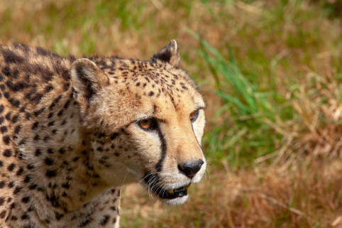
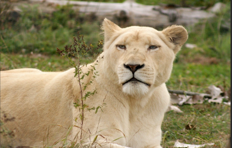
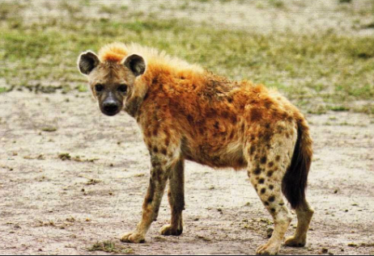
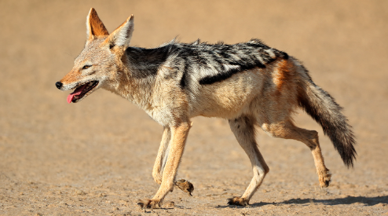

Les champions de la vitesse se rencontrent dans les savanes, ou ils atteignent des vitesses exeptionnelles pour attaquer leurs proies.
 Le guépard à gauche détient le record: 110km/h sur 200 à 300m. 70 km/h pour une lionne à droite qui veut chasser.
 La hyène à gauche, et le chacal à droite, sont aussi des rapides. Quand ils chassent, ils peuvent faire des pointes à 65km/h